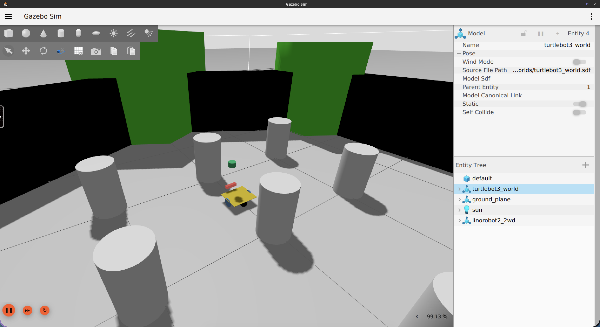
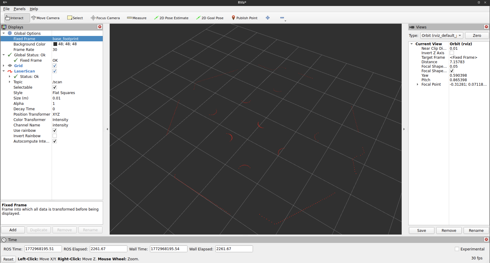

Setting Up Sensors¶
Why Sensors Matter¶
Odometry tells the robot where it thinks it is based on how far its wheels have turned. Sensors tell the robot what's actually around it. Without sensors, the robot is blind. It can't detect obstacles, can't build a map of its environment, and can't localize itself within a map.
linorobot2 uses two primary sensor categories:
- LaserScan (2D lidar): produces a 360° ring of distance measurements on a flat plane. This is the primary sensor for obstacle detection and SLAM.
- Depth camera (RGBD): produces a 3D point cloud and/or depth image. Useful for detecting obstacles that a floor-level lidar misses (like table legs above the scan plane).
Both sensor types publish data that Nav2 and SLAM Toolbox consume directly.
Physical Robot Setup¶
On a physical robot, sensors are configured during installation via the install.bash script's --laser and --depth arguments. The script installs the appropriate ROS2 driver packages and sets environment variables that the bringup launch files use to start the correct driver at boot.
Supported Laser Sensors¶
| Argument | Sensor |
|---|---|
a1 |
RPLIDAR A1 |
a2 |
RPLIDAR A2 |
a3 |
RPLIDAR A3 |
s1 |
RPLIDAR S1 |
s2 |
RPLIDAR S2 |
s3 |
RPLIDAR S3 |
c1 |
RPLIDAR C1 |
ld06 |
LD06 LIDAR |
ld19 |
LD19/LD300 LIDAR |
stl27l |
STL27L LIDAR |
ydlidar |
YDLIDAR |
xv11 |
XV11 |
realsense * |
Intel RealSense D435, D435i |
zed * |
Zed |
zed2 * |
Zed 2 |
zed2i * |
Zed 2i |
zedm * |
Zed Mini |
Sensors marked with * are depth cameras used as laser sensors. When configured this way, the launch files automatically run depthimage_to_laserscan to convert the depth image into a sensor_msgs/LaserScan message on the /scan topic, making it compatible with SLAM Toolbox and Nav2 without any extra configuration.
Supported Depth Sensors¶
| Argument | Sensor |
|---|---|
realsense |
Intel RealSense D435, D435i |
zed |
Zed |
zed2 |
Zed 2 |
zed2i |
Zed 2i |
zedm |
Zed Mini |
oakd |
OAK-D |
oakdlite |
OAK-D Lite |
oakdpro |
OAK-D Pro |
Simulated Robot¶
In Gazebo, sensors are defined in URDF/xacro files and are already configured for each robot type. You don't need to install any additional drivers. Gazebo simulates the sensors and publishes on the same topics as real hardware.

Sensor URDF Files¶
Sensor definitions live in linorobot2_description/urdf/sensors/:
generic_laser.urdf.xacro: Simulates a 360° 2D lidar:
- 360 rays, full 360° sweep
- Range: 0.08 m to 12.0 m
- Update rate: 10 Hz
- Publishes to:
/scan(topic name:scan, frame ID:laser)
depth_sensor.urdf.xacro: Simulates an RGBD camera:
- Resolution: 640 × 480
- Update rate: 30 Hz
- Horizontal FOV: ~86°
- Depth range: 0.3 m to 100 m
- Publishes to:
/cameratopics
imu.urdf.xacro: Simulates an IMU:
- Publishes to:
/imu/dataat 50 Hz
How Sensors Are Included¶
Each robot type's URDF (linorobot2_description/urdf/robots/<robot_type>.urdf.xacro) already includes the laser and depth sensor:
<xacro:generic_laser>
<xacro:insert_block name="laser_pose" />
</xacro:generic_laser>
<xacro:depth_sensor>
<xacro:insert_block name="depth_sensor_pose" />
</xacro:depth_sensor>
The laser_pose and depth_sensor_pose blocks define where the sensors are mounted relative to base_link. These are defined in the robot's properties file.
Configuring Sensor Positions¶
Sensor positions are set in linorobot2_description/urdf/<robot_type>_properties.urdf.xacro. For example, in 2wd_properties.urdf.xacro:
<xacro:property name="laser_pose">
<origin xyz="0.12 0 0.33" rpy="0 0 0"/>
</xacro:property>
<xacro:property name="depth_sensor_pose">
<origin xyz="0.14 0.0 0.045" rpy="0 0 0"/>
</xacro:property>
All positions are measured from base_link (the point about which the robot rotates).
On a differential drive or skid steer robot this is typically the midpoint between
the driving wheels. Change these values to match where your sensors are physically
mounted. After editing the xacro file, rebuild the workspace:
More details on how these poses relate to the TF tree are covered in the Transforms section.
Published Topics¶
After bringup (Physical Robot) or Gazebo launch (Simulated Robot), the following sensor topics should be active:
| Topic | Type | Source |
|---|---|---|
/scan |
sensor_msgs/LaserScan |
2D lidar or depth-to-laser conversion |
/camera/image_raw |
sensor_msgs/Image |
Depth camera RGB image |
/camera/depth/image_raw |
sensor_msgs/Image |
Depth camera depth image |
/imu/data |
sensor_msgs/Imu |
IMU data. Published directly by the firmware (no magnetometer) or by the Madgwick filter (magnetometer enabled). In the Simulated Robot, published by imu.urdf.xacro |
/imu/data_raw |
sensor_msgs/Imu |
Raw IMU acceleration and gyro data (Physical Robot only, when magnetometer is enabled) |
/imu/mag |
sensor_msgs/MagneticField |
Magnetometer data (Physical Robot only, when magnetometer is present) |
You can verify a sensor is publishing correctly with:

What's Next¶
With sensors publishing data, the next step is to make sure the robot knows where those sensors are mounted in 3D space, so it can correctly interpret a laser hit at angle X as being at a specific position in the world. That's the job of the TF tree, covered in Setting Up Transforms.